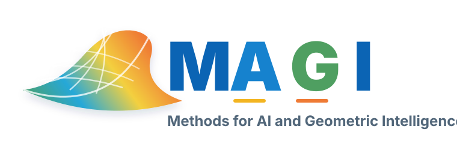
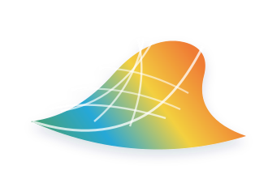

MAGI Lab

- Machine learning and deep learning for visual, multimodal, and time series data.
- Geometry-aware, reliable, and interpretable AI methods.
- Applications in medical AI, scientific discovery, and AI for Good.

MAGI Lab
Methods for AI and Geometric Intelligence
MAGI Lab develops reliable, interpretable, and geometry-aware AI methods for scientific and socially meaningful problems.
Building AI methods that respect structure and work in real-world settings.
We develop machine learning and deep learning approaches for visual, multimodal, and time series data.
We study geometry-driven learning, topology, shape awareness, and structure-aware representations.
We apply AI to medical AI, scientific discovery, wildlife conservation, and other socially meaningful domains.
Research directions currently shaping the group.
Clinically informed models for health and pathology data.
Language, vision-language, and multimodal reasoning systems.
Geometry, topology, and structure-aware representation learning.
AI methods for science, conservation, and human-centered impact.
How we approach research, collaboration, and student growth.
We build careful AI methods, then test them on meaningful real-world problems where structure and reliability matter.
We collaborate across computer science, medicine, engineering, science, and socially impactful application areas.
Students are encouraged to develop strong technical foundations, clear research taste, and confidence presenting their work.
We welcome motivated students interested in AI, geometry, multimodal learning, medical AI, and AI for Good.
News and Public Articles
Public-facing articles, research announcements, paper acceptances, talks, and lab milestones.
Stories and announcements written for a broad audience.
April 1, 2026
Nevada Today article mentioning Ankita Shukla’s role in developing AI models that analyze sensor data for RoboHydra.
March 6, 2026
Nevada Today article on UNR research with George Bebis and Ankita Shukla focused on reliable AI for breast cancer, medical text, and sleep disorders.
Recent publications, public articles, and lab milestones.
Research
MAGI Lab develops AI methods that combine geometric structure, multimodal learning, and real-world impact.
01
Reliable AI systems for health applications, including medical imaging, clinical text, sleep disorders, and translation from models to real-world settings.
02
Methods for language, vision-language, and multimodal reasoning systems, with attention to reliability and evaluation.
03
Geometry-driven deep learning, topological data analysis, shape awareness, and structure-aware representations.
04
AI methods for socially meaningful applications, including human health, scientific discovery, and wildlife conservation.
People
Principal Investigator
I am an Assistant Professor in the Computer Science and Engineering Department at University of Nevada Reno, USA. Before joining UNR, I was a Postdoctoral researcher in the Geometric Media Lab, working with Prof. Pavan Turaga at Arizona State University.
My research interests lie in deep learning and machine learning approaches for visual and time series data, topological data analysis, differential geometry, and geometry driven approaches for learning. From the applications point of view, I focus on AI for Science and AI for Good, specifically towards wildlife conservation and human health applications.
Current MAGI Lab members.
Ph.D. Student
Ph.D. Student
Ph.D. Student · Co-Advised
Co-advised with Prof. Ji H. Yoon.
Current MAGI Lab members.
Master's Student
Master's Student
Master's Student
Future MAGI Lab members.
Undergraduate researchers, honors students, and project contributors will be listed here.
Former lab members.
Former students, visitors, and collaborators will be listed here as the lab grows.
Publications
Work across geometric learning, computer vision, robust representations, scientific AI, and conservation applications.
2026
Xuan Wang, Zhongling Xu, Gopi Kannedhara, Joakim Nguyen, Jian Yu, Jinrui Fang, Abdurrahmaan Baghdadi, Tianlong Chen, Awais Naeem, Chandra Krishnan, Edward Castillo, Andrew H. Song, Ankita Shukla, Ying Ding, Nicholas Konz, Hairong Wang.
arXiv:2605.24399
2026
Joakim Nguyen, Jian Yu, Jinrui Fang, Nicholas Konz, Tianlong Chen, Sanjay Krishnan, Chandra Krishnan, Ying Ding, Hairong Wang, Ankita Shukla.
ICHI 2026; arXiv:2604.21060
2026
Jian Yu, Joakim Nguyen, Jinrui Fang, Awais Naeem, Zeyuan Cao, Sanjay Krishnan, Nicholas Konz, Tianlong Chen, Chandra Krishnan, Hairong Wang, Edward Castillo, Ying Ding, Ankita Shukla.
arXiv:2603.01547
2026
Mayukh Debnath, Ankita Shukla.
WACV 2026 Workshops, LENS: Learning and Exploitation of Latent Space Geometries, pp. 1326-1333
2025
Gunner Stone, Youngsook Choi, Alireza Tavakkoli, Ankita Shukla.
arXiv:2509.17207
2025
Utkarsh Nath, Rajhans Singh, Ankita Shukla, Kuldeep Kulkarni, Pavan K. Turaga.
International Journal of Computer Vision, 133(5): 2967-2995
2025
Hongjun Choi, Eun Som Jeon, Ankita Shukla, Pavan K. Turaga.
Neurocomputing, 645: 130408
2025
Eun Som Jeon, Sinjini Mitra, Jisoo Lee, Omik M. Save, Ankita Shukla, Hyunglae Lee, Pavan K. Turaga.
IEEE Internet of Things Journal, 12(16): 34406-34420
2025
Ankita Shukla, Sandeep Kumar, Amrit Singh Bedi, Tanmoy Chakraborty, Pooja Singh, Sandeep Chatterjee, Gullal S. Cheema.
1st Workshop on Multimodal Models for Low-Resource Contexts and Social Impact; Shared Task on Machine Translation into Tribal Languages
2024
Eun Som Jeon, Hongjun Choi, Ankita Shukla, Yuan Wang, Hyunglae Lee, Matthew P. Buman, Pavan K. Turaga.
Engineering Applications of Artificial Intelligence, 130: 107719
2024
Eun Som Jeon, Hongjun Choi, Ankita Shukla, Yuan Wang, Matthew P. Buman, Hyunglae Lee, Pavan K. Turaga.
EPJ Data Science, 13(1): 77
2024
Ankita Shukla, Rishi Dadhich, Rajhans Singh, Anirudh Rayas, Pouria Saidi, Gautam Dasarathy, Visar Berisha, Pavan K. Turaga.
Frontiers in Computer Science, 6
2024
Baaz Jhaj, Ankita Shukla, Pavan K. Turaga, Michael N. Kozicki.
AI-SIPM 2024
2023
Eun Som Jeon, Hongjun Choi, Ankita Shukla, Pavan K. Turaga.
Neurocomputing, 518: 466-481
2023
Eun Som Jeon, Hongjun Choi, Ankita Shukla, Yuan Wang, Matthew P. Buman, Pavan K. Turaga.
IEEE Transactions on Instrumentation and Measurement, 72: 1-14
2023
Tripti Shukla, Paridhi Maheshwari, Rajhans Singh, Ankita Shukla, Kuldeep Kulkarni, Pavan K. Turaga.
CVPR Workshops 2023
2023
Rajhans Singh, Ankita Shukla, Pavan Turaga.
CVPR 2023
2023
Rajhans Singh, Ankita Shukla, Pavan Turaga.
DLGC, CVPR 2023
2023
Hongjun Choi, Eunsom Jeon, Ankita Shukla, Pavan Turaga.
WACV 2023
2022
Nicholas Ho, John Kevin Cava, John Vant, Ankita Shukla, Jake Miratsky, Pavan Turaga, Ross Maciejewski, Abhishek Singharoy.
MLSB, NeurIPS 2022
2022
D. Lagrois, T. R. Bonnell, A. Shukla, C. Chion.
Journal of Marine Science and Engineering
2022
E. Jeon, A. Som, A. Shukla, K. Hasanaj, M. P. Buman, P. Turaga.
IEEE Internet of Things Journal
2022
V. M. Arujo, Ankita Shukla, C. Chion, S. Gambs, R. Michaud.
Sensors and Artificial Intelligence for Wildlife Conservation
2022
R. Singh, A. Shukla, Pavan Turaga.
2021
Ankita Shukla, R. Anirudh, E. Kur, J. J. Thiagarajan, P. Bremer, B. K. Spears, T. Ma, Pavan Turaga.
Machine Learning for Physical Sciences, NeurIPS 2021
2021
J. K. Cava, J. Vant, N. Ho, A. Shukla, Pavan Turaga, R. Maciejewski, A. Singharoy.
ELLIS Machine Learning for Molecule Discovery Workshop
2021
Ankita Shukla, Pavan Turaga, Saket Anand.
3rd Workshop on Adversarial Learning Methods for Machine Learning and Data Mining, KDD 2021
2020
A. Shukla, Pavan Turaga, Saket Anand.
2020
2019
Ankita Shukla, C. Anderson, G. S. Cheema, P. Guo, S. Onda, D. Anshumaan, S. Anand, R. Farrell.
CVWC, ICCV 2019
2019
Ankita Shukla, Shagun Uppal, Sarthak Bhagat, Saket Anand, Pavan Turaga.
BMVC 2019
2019
Ankita Shukla*, Gullal Singh Cheema*, Saket Anand, Qamar Qureshi, Yadvendradev Jhala.
PRICAI 2019 (*Equal Contribution)
2018
Ankita Shukla, Shagun Uppal, Sarthak Bhagat, Saket Anand, Pavan Turaga.
ICVGIP 2018
2018
Anirudh Som, Kowshik Thopalli, K. N. Ramamurthy, V. Venkataraman, Ankita Shukla, Pavan Turaga.
ECCV 2018
2018
Ankita Shukla*, Gullal Singh Cheema*, Saket Anand, Qamar Qureshi, Yadvendradev Jhala.
arXiv:1811.00743 (*Equal Contribution)
2017
Dhananjay Kimothi, Ankita Shukla, Pravesh Biyani, Saket Anand, James M. Hogan.
SPAWC 2017
2017
Wazir Singh, Ankita Shukla, Sujay Deb, Angshul Majumdar.
Integration, the VLSI Journal
2016
Ankita Shukla, Saket Anand.
ICIP 2016
2015
Ankita Shukla, Saket Anand.
Differential Geometry in Computer Vision, BMVC 2015 (Best Student Paper)
2015
Angshul Majumdar, Ankita Shukla, Rabab Ward.
ICASSP 2015
2015
Ankita Shukla, Angshul Majumdar.
Biomedical Signal Processing and Control
2015
Ankita Shukla, Angshul Majumdar, Rabab Ward.
ICAPR 2015
2015
Ankita Shukla, Angshul Majumdar.
Biomedical Signal Processing and Control
2014
Anupriya Gogna, Ankita Shukla, Hemant Kumar Aggarwal, Angshul Majumdar.
ICIP 2014
2014
Wazir Singh, Ankita Shukla, Sujay Deb, Angshul Majumdar.
EMBC 2014
2014
2013
Ankita Shukla, Angshul Majumdar, Rabab Ward.
IASTED Signal and Image Processing 2013
Teaching
Courses taught in artificial intelligence, large language models, and multimodal AI at the University of Nevada, Reno.
ENG 481/681
Fall 2026
CS 482/682
Fall 2024, Fall 2025
CS 791
Fall 2024
CS 491/691
Spring 2025
Join MAGI Lab
I am looking for highly self-motivated Ph.D., graduate, and undergraduate students with a strong commitment to research.
Contact
Emailankitas@unr.edu
Phone(775) 682-5318
OfficeWPEB 435
Computer Science and Engineering
University of Nevada, Reno
William N. Pennington Engineering Building
Reno, NV 89557